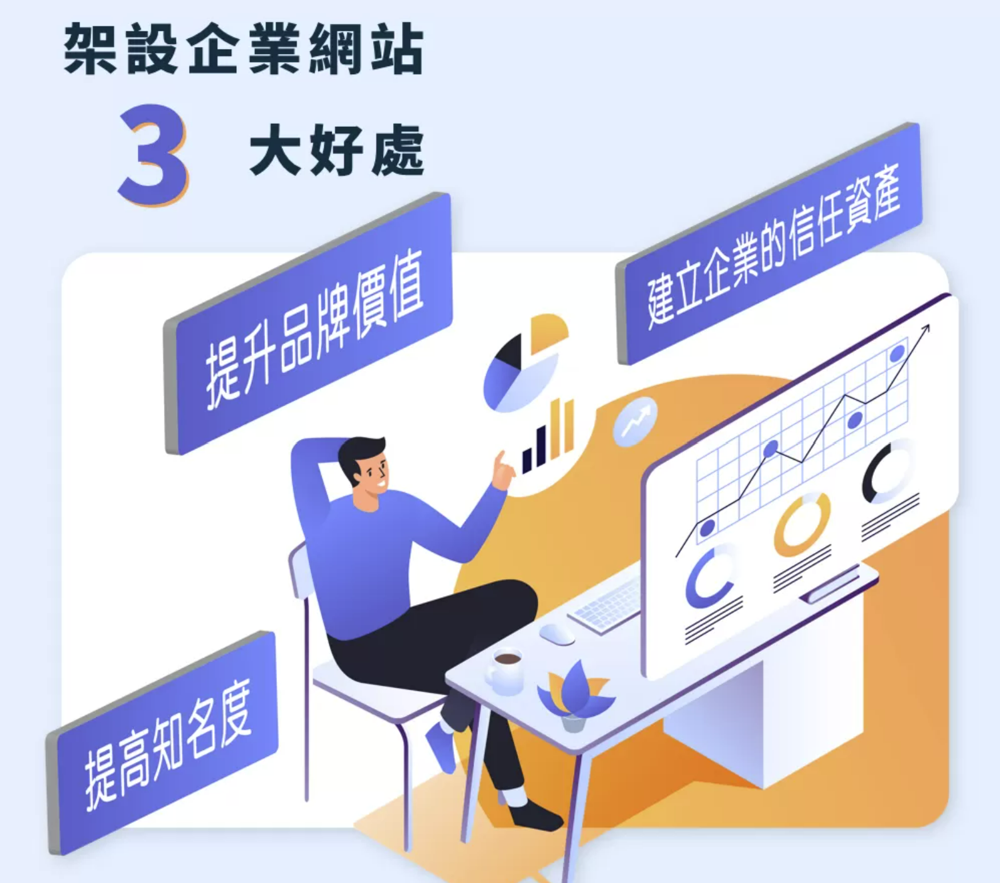
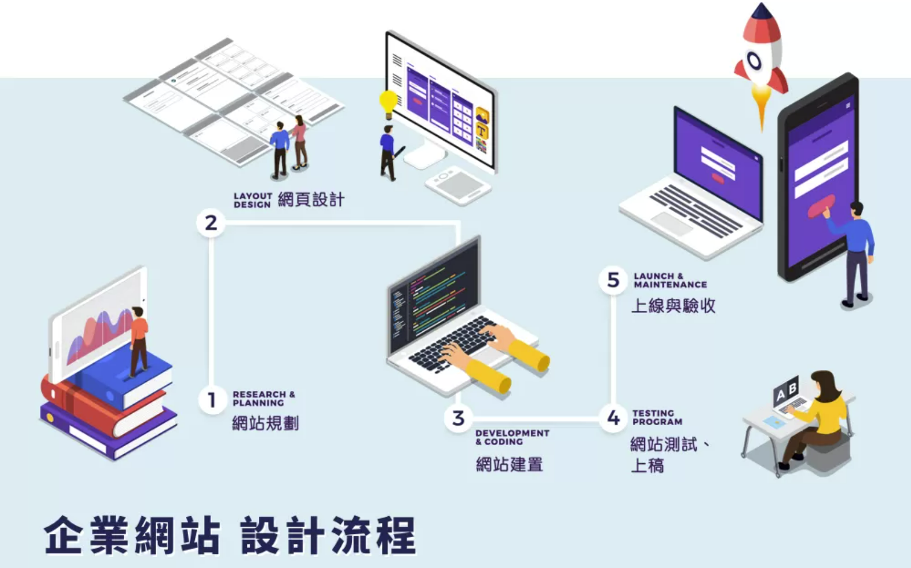

如何设计一个良好的企业网站帮助提高企业品牌价值？
企业网站就是企业在网路世界中的门面，而好的企业网站设计，能为你建立起消费者的信任，提高品牌魅力并带来更多的商机。今天就要来告诉你良好的企业网站该如何进行设计与作品案例，以及有何需要注意的要点！
目录

为什麽要架设企业网站？3大好处告诉你
随著数位时代的来临，越来越多人知道架设网站有助于品牌的推广，但知道归知道，你了解其中真正的原因吗？企业网站如何具体地帮助你达到推广的目的？下面就让我来帮你一一解析。
1. 提升品牌价值
品牌价值是企业经营的核心，而企业形象网站的存在，就是一种品牌价值的体现，透过网站的改版，就能以最快的速度让品牌形象焕然一新，并且凸显与竞争对手的差异，因此，许多上市柜公司经常在宣布重大改革前，会先进行企业网站的改革，藉此提升企业的品牌价值，以换取更多的成效。
2. 建立企业的信任资产
“消费者的信任”是企业的重要资产，因此企业网站不只用来提供视觉上的企业形象，也必须建有公开透明的企业资讯，如：企业的背景（公司简介）、业务范畴（产品／服务）、最新消息、联络方式等，以此做为建立企业信任资产的第一步；而加入企业社会责任、人力资源政策、投资关係等资讯，还能彰显企业的规模及愿景，更近一步地加深消费者的信任。
3. 提高知名度
企业网站就像是一个不会下架的广告，只要做好网页内容规划及SEO优化，就有机会提升网站的曝光，并且若能将有价值的网页内容透过社群分享出去，就更能让企业的知名度逐渐向外界扩展！
企业网站设计5大注意事项
由此可知，对于一个成功的企业来说，优良的企业网站是不可或缺的元素，那麽企业网站该怎麽设计、架设？有以下5大注意事项：
1. 视觉设计︱简单明瞭最适当
一个拥有多种吸睛特效的网站，或许会让人耳目一新，但随之而来的可能是龟速的网页载入速度，让使用者在一阵惊叹后，紧接著的却是漫长的等待；或是因为网站过于花俏，使访客找不到需要的资讯，进而使网站跳出率提高。因此，能够让访客看得懂、找得到资讯的网页设计，才能称得上是成功的企业网站，并且为你带来源源不断的生意。
2. 架构设计︱明确规划很重要
从网站架构表中可以看出网站的定位，是企业网站建置前期最重要的文件。而不同产业的网站架构也会有所不同，因此提交一份明确目标的网站架构，才能让Google及访客对你的网站有正确的认知。
3. 首页设计︱凸显优势要记得
网站的首页就是企业的网路入口，若在入口处没有明确的指引及吸引人的优势，那麽恐怕很难让人想“走进去”。因此我认为，成功的企业网站首页，须结合消费者行为的AIDA法则，透过网站的视觉形象（认知）、产品与服务范畴（兴趣）、企业优势与核心能力（慾望）、清楚明瞭的联络方式（行动），顺畅地引导动线，才能成功提升网站流量及促使潜在客户转换。
4. 产品资料︱醒目好找要注意
你买东西前是否会先上网研究呢？在这个资讯爆炸的年代，想必大部分的人都会有此习惯，因此企业网站的产品网页规划就更显得重要了。除了网页的原始码要遵循Google搜寻的T／D／H结构外，产品资料的分类、内容、是否纳入“全站搜寻”等因素也是建置的重点之一。
5. 技术更新︱随时更新是重点
而除了你看得见的网站前台视觉规划外，网页的技术更新也是很重要的，如：RWD响应式网页设计、https安全性连线、CMS后台管理系统以及网路搜寻关键的SEO等看不见的技术，都是近年来更新的项目，随时跟上世界的变化，才能确保你的网站不落人后！
企业网站设计流程
看到这边，你是不是也觉得头痛了起来？架设一个企业网站有这麽多“眉眉角角”，该从何做起？不用担心，我对网页设计不但重视网页设计过程的品质，也不放过网页完成后的成效，提供你以下贴心的服务流程：

1. 网站规划
接到网站需求询问后，会先以电话访谈，并于访谈1週后提供规划书及报价单，待讨论定案后即可签约。
2. 网页设计
汇集客户需求，并从首页开始规划。会先提供提案稿并与客户进行讨论沟通，确认后再进行设计稿，并于首页完成后才进行各内页的设计，以确保网站风格一致。
3. 网站建置
包含前台网页切版（html+CSS）、CMS后台系统整合、资料库与程式功能建置。
4. 网站测试、上稿
反覆测试及微调网站，确认无误后即可转移至正式主机，正式上线。
5. 上线与验收
转移至正式主机后，会进行全案验收及后台操作教育训练，完成完整的建站服务。
整个流程耗时不定，根据项目的大小而定，过程中我会与客户反覆地讨论、确认，因为我相信，细心的服务，才能与客户一同创造出独一无二且优质的企业网站，若你正在寻找合适的网页设计公司，那麽就放心交给我设计，现在就赶紧与我联繫吧！ Whatsapp Me